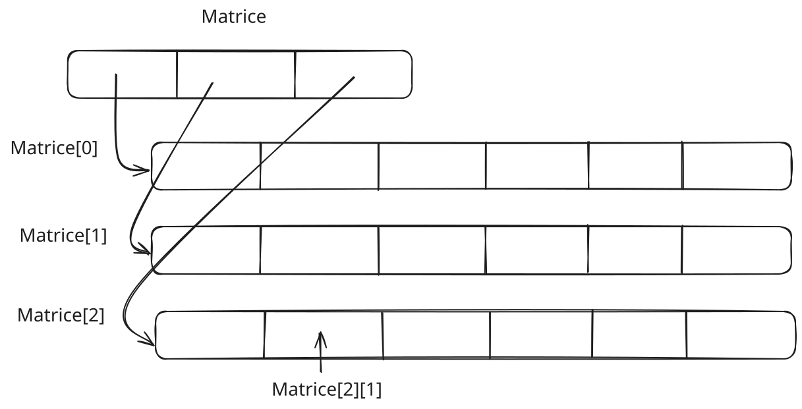

TD4 - Allocation dynamique de mémoire et listes
Exercice 1 - Allocation dynamique de tableaux
Nous avons vu que lorsque l’on déclare un tableau int tab[N], on allouait également N cases mémoires contiguës. C’est pour cette raison que le compilateur doit connaître la valeur N à l’avance. Heureusement, il est possible d’allouer de la mémoire dynamiquement avec malloc. Les tableaux déclarés de cette façon s’utilisent comme d’habitude.
- Ecrivez une fonction qui demande à l’utilisateur (dans le terminal) une taille de tableau puis autant d’entiers et construisez le tableau correspondant.
- Faire une fonction qui permet alors d'afficher ce tableau et tester le.
- Pour ne pas oublier de libérer la mémoire, faire une fonction
free_tableau, dont on donnera le prototype, pour libérer le tableau à la fin du programme.
Considérons des matrices qui sont des tableaux bidimensionnels. On a vu dans le TD précédent, une représentation de ceux-ci à l'aide d'un tableau unidimensionnel en concaténant les lignes bout à bout. Considérons maintenant la matrices comme un tableau de pointeurs: chaque élément de la matrice est un pointeur vers un autre tableau contenant les valeurs de la ligne pour toutes les colonnes correspondantes:

- Quel serait alors le type de la variable
Matrice? - Créer une fonction qui alloue alors une matrice de type
doublede taille \(m\times n\) et renvoie le pointeur vers l'adresse de celle-ci. - Créer la matrice identité de taille \(3\times 3\)
- Faire une fonction
free_matricequi permet de libérer l'espace en mémoire pris par tous les éléments de la matrice
Exercice 2 - Chaines de caractères
On gérera dans chacune des questions suivantes, les problèmes de gestion de la mémoire. Ne pas utiliser les fonctions standards strcat et strlen de la librairie string.h.
On veut dans cette exercice manipuler des chaines de caractères en allouant dynamiquement la place nécessaire pour les stocker. En effet, jusque là nous n'avons pas vu comment manipuler des chaines de caractères de taille inconnue à la compilation.
Supposons que l'on a deux chaines de caractères char *str1 et char *str2.
- Faire une fonction
len_strqui renvoie la longueur d'une chaine de caractères. On rappelle que peut importe la taille allouée pour la chaine de caractères, celle-ci se termine toujours par le caractère nul'\0'. - Faire une fonction
concat_strqui concatène deux chaines de caractères et renvoie la chaine de caractères résultante. La nouvelle chaine résultante doit être allouée dynamiquement - Modifier
concat_strpour qu'elle concatène le deuxième argument à la fin du premier. On utilisera la fonctionreallocpour allouer la place nécessaire. - Faire un programme qui demande à l'utilisateur d'entrer des mots de taille \(49\) maximum et qui les concatène dans une chaine de caractères séparé par des espaces. Le programme s'arrête lorsque l'utilisateur entre le mot "FIN".
Exercice 3 - Listes doublement chaînées
Nous avons vu en cours la notion de liste chainée. Nous voulons maintenant implémenter une liste doublement chaînée. Chaque élément de la liste doit contenir un entier et un pointeur vers l'élément suivant et l'élément précédent.
- Faire un dessin illustrant la structure de la liste doublement chaînée sur le modèle vue en cours.
- Créer une structure
Elementqui contient un entier et deux pointeurs vers les éléments suivant et précédent. - Créer une structure
Listequi contient un pointeur vers le premier et le dernier élément de la liste. - Faire une fonction qui calcule la taille de la liste.
- Faire une fonction qui affiche les éléments de la liste.
- Faire une fonction
ajouter_elementqui ajoute un élément à la fin de la liste. - Faire une fonction qui permet de renverser la liste. Pour cela, on pourra suivre la démarche suivante (faire un dessin des étapes):
- Traverser la liste en partant du premier élément et en allant jusqu'au dernier.
- Échanger les pointeurs
suivantetprécédentde chaque élément. - Changer les pointeurs
premieretdernierde la liste.